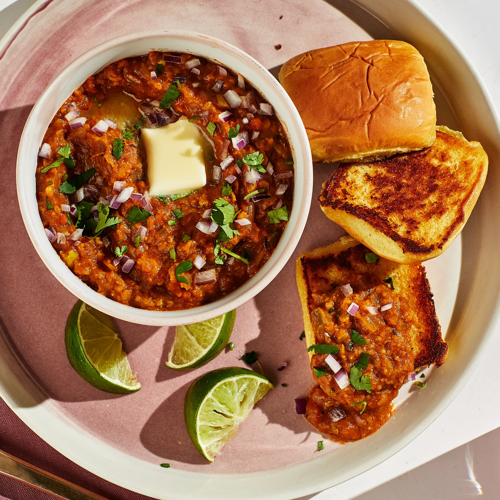

Pav Bhaji
ingredients
- Mixed Vegetables (Potato, Cauliflower, Carrot, Beans, Capsicum)
450 gms
- Oil 2 Tablespoons
- Onion (Chopped)2
- Ginger-Garlic Paste1
Teaspoon
- Tomato (Chopped)2
- Peas50
gms
- Water2
Cups
- Green Chillies (Chopped)2
- Turmeric Powder0.5
Teaspoon
- Red Chilli Powder1
Teaspoon
- Coriander Powder2
Teaspoons
- Cumin Powder1
Teaspoon
- Amchur Powder1
Teaspoon
- Coriander Leaves (Chopped)2
Tablespoons
- Lime Juice2
Tablespoons
- Salt1
Pinch
Process
- Prepare ingredients as mentioned in the list.
- Boil the mixed vegetables along with peas, in a pressure cooker with 1 cup of water, for one whistle. Keep aside.
- Heat oil in a pan, add chopped onions and fry till they turn golden brown. Add ginger garlic paste and fry for 5 minutes. Add tomatoes, green chillies, turmeric powder, chilli powder, coriander powder, cumin powder, and fry for a minute till all the masalas are well combined.
- Add the vegetables along with the water, MAGGI Masala ae Magic, salt and mix well. Mash the vegetables well with a spoon. Add the amchur powder and mix well.
- Add the remaining 1 cup water and simmer for 2 minutes to get a thick gravy. Remove from fire and add the lime juice and mix well.
- Garnish with coriander leaves and serve hot with Pav